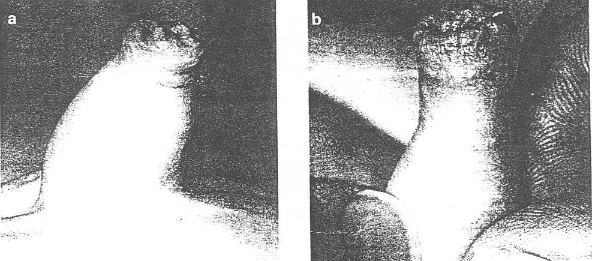
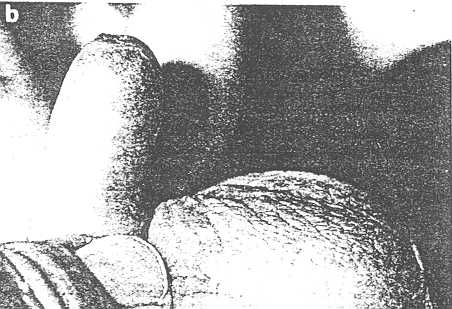
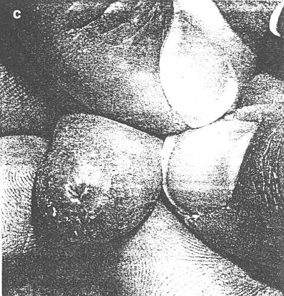
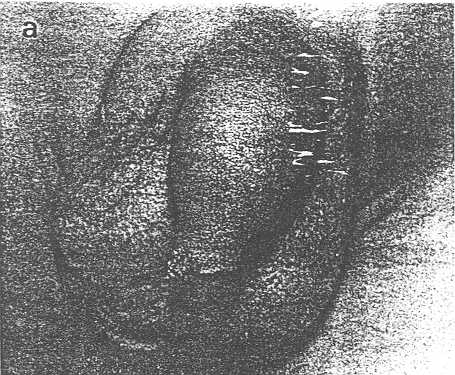
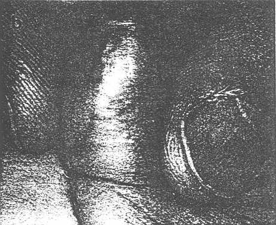
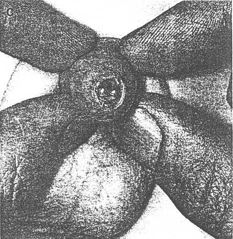
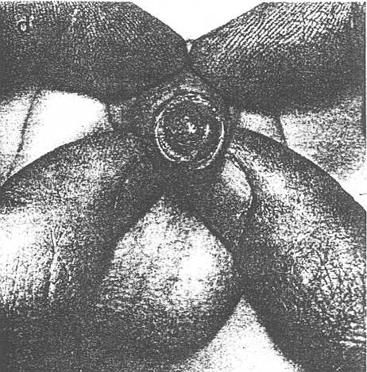
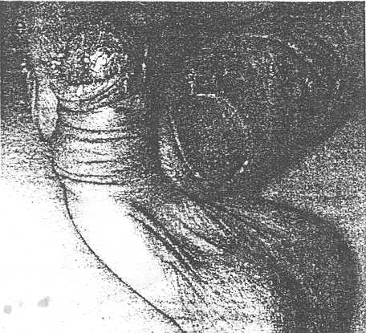

THE CIRCUMCISION REFERENCE LIBRARY
PA DEWAN, HC TIEU and BS CHIENG
Urology Unit, Women's
and Children's Hospital and the Departments of Surgery
and Paediatrics,
University of Adelaide, Adelaide, South
Australia, Australia
Abstract: Circumcision has been the traditional treatment for phimosis, but now is not the only management option, the best of which appears to be topical steroid application. Importantly, the literature suggests that phimosis is over-diagnosed, indicating that a prospective, randomized controlled study is needed to compare the non-circumcision options. Such a study would require consensus on the diagnostic criteria for phimosis; therefore, a more exacting definition would be needed and is suggested. Despite the non-controlled data on medical treatment of true phimosis, there seems little doubt that surgical intervention is not needed for all male infants with adherence of the foreskin to the glans, a non-retractable foreskin or, indeed true phimosis.
Key words: betamethasone; circumcision; foreskin, hydrocortisone, phimosis.
It is thought that the prepuce is a vestigial structure that, at birth, is nearly always adherent to the glans and is non- retractable.1 This is the result of there being a common layer of squamous epithelium between the glans and the inner surface of the prepuce.2 Thus, the foreskin completely clothes the glans during the years the child is incontinent, protecting the glans against injury by minimizing contact with sodden clothes or nappies.1
Worldwide, only one in
seven males is circumcised,2 a
rate which varies from country to country. In Australia and
Canada, 40% of boys are circumcised, 80% in the United States
of America and only 6% in the United Kingdom.3 Non-surgical indications are common
and include religious, cultural and social reasons. Thus it
is not surprising that circumcision is the oldest and most
widely performed operation in he world.4 However, the circumcision rate in
Australia has declined over the last decade, partly due to
the statements by the American Academy of Paediatrics and the
Australian College of Paediatrics that routine neonatal
circumcision is not medically indicated.3 This is supported by Metcalf et
al. who argued that good penile hygiene offers all the
advantages of routine circumcision without the risks
associated with the surgical procedures.5 As a result, circumcision for
non-medical reasons, other than religious reasons, is not
encouraged.3 exceptions include
recurrent balanitis and paraphimosis which are considered
relative indications, and balanitis xerotica obliterans (BXO)
which is usually regarded as an absolute indication.3,6 The most common stated medical
indication for circumcision is phimosis; however, the
definition of this condition is obscure in most
publications.
The normal prepuce gradually becomes detached from the glans, and thus retractable, as keratinization of the epithelial layers occurs, aided by smegma, which helps to dissect the space between the glans and the foreskin, preventing re-adherence.2 Gairdner1 and Øster7 found that the prepuce is retractable in only 4% of newborn males, 20% at age 6 months, 50% at 3 years and 99% at 17 years of age. Therefore a certain proportion of any age group have a non-retractable foreskin, especially before 2 years of age.8 Little is known or written about the etiology of true phimosis, despite the supposed frequency of phimosis varying from 4 to 10%.9
In his textbook in 1948, Winsbery-White defined phimosis as the congenital or acquired narrowing of the preputial opening, characterized by a non-retractable foreskin without adherence, which can lead to accumulation of secretions under the foreskin resulting in irritation and balanitis. Interference with micturition can subsequently cause back-pressure on the bladder, ureters and kidneys.10
A more precise, practical guide to the difference between a non-retractable and a phimotic foreskin is as follows; when the normal but non-retractable infant foreskin is examined, attempted gentle retraction results in the distal part of the foreskin pouting, and the narrow portion is proximal to the tip of the prepuce (Fig. 1). Forced retraction of such a foreskin can result in splitting as is well demonstrated in the figure presented by Stenram et al.11 In contrast, true phimosis produces a coneshaped foreskin during the same gentle retraction manoeuvre, with a fibrotic, circular band that forms the most distal and narrowest part of the prepuce (Fig. 2). Minor narrowing of a retractable foreskin, which does not split during attempted complete retraction, probably does not require intervention (Fig. 3).
Confusion about the definition of true phimosis is highlighted by the study of Griffiths and Frank, who found that of 128 boys with a medical reason for referral to a paediatric urologist for circumcision, only 30 had true phimosis (although they did not give an exacting definition). They suggested that ballooning and non-retractability is often over interpreted. In some cases, the referring practitioner may have used the term `phimosis' to facilitate referral, thus further confusing the debate on the appropriate management of phimosis.

In 100 cases of balanitis, Escala and Rickwood recorded recurrent attacks in only 36%, leading them to suggest that circumcision was indicated only in recurrent cases.13 Also, they reported that, while 4% of boys will develop balanitis, only 1% have true phimosis.
Phimosis in the short term can cause ballooning during micturition, discomfort with voiding, infection, and pain on erection. In the long term, renal damage and BXO can occur, and carcinoma of the penis has been thought to be more common when phimosis is present. Poyter and Levy stated that BXO can develop at any age and appears to have little relationship to circumcision status;14 in appears, however, to be rare in boys aged less than 5 years and cure is often affected by circumcision of a phimotic foreskin.15,16. In examining multiple circumcision and postmortem specimens Reddy et al. suggested that a non-phimotic foreskin in conjunction with regular hygiene had no increased risk of penile cancer.17 Further arguments against circumcision for the prevention of carcinoma of the penis are given in two recent letters in the Canadian literature,18,19 emphasizing the rarity of penile cancer.
Circumcision is considered by many to be the least problematic alternative way of managing the foreskin. This view is not supported by an 8 year longitudinal study of over 500 boys in New Zealand; penile problems occurred in 11.1% of uncircumcised and 18.8% of the circumcised boys.20


Operative
A number of studies have looked at different ways of managing the foreskin surgically, including routine circumcision, sutureless circumcision,21 modifications of preputial-plasty,22-24 dilation with a balloon,25 or artery forceps26 and forced retraction with a local, general or no anaesthetic.27-29 Unfortunately, none of these studies have been prospective randomized trials.
The majority of circumcisions in America are carried out as a neonatal procedure, prior to discharge from the maternity ward. In a 10 year review of circumcision on 5521 of 5882 male infants from 1963 to 1972, Gee and Ansell recorded the treatment outcome for a group circumcised either with a Plastibell or the Gomco device.30 Complications included a 1% haemorrhage rate and less than 1% other complications.30 In contrast, Persad et al. found an 8% meatal stenosis rate with the operation performed before 1 month of age.31 Overall complication rates range from 0.2 to 0.6%, reaching 35% if minor complications are also considered.2 Some of these include ulceration of the meatus, infection (local and systemic), haemorrhage, removal of excessive or inadequate amount of skin, wound dehiscence, electrocautery damage to the penis, partial amputation and complications from anaesthesia.2,3,11,32,33
Non-operative
Steroid cream is a painless, less complicated and more economical alternative to circumcision for the treatment of phimosis. Wright had a success rate of 80% (89 of 111 boys) using 0.05% betamethasone.34 Kikiros et al. reported an improvement in 33 of 42 boys (78%) with 0.05% betamethasone, and in 18 of 21 boys (86%) with hydrocortisone, but they considered that the betamethasone worked more quickly.3 Another steroid cream, 0.05% clobetasol propionate, has also been used successfully by (70%, 54 boys) by Jørgersen and Svensson.35
In a retrospective study of 20 boys with phimosis diagnosed according to the more vigorous definition given earlier and treated earlier, we found 13 (65%) had resolution of their phimosis and retained their foreskin (unpubl. data). Most required only 1% hydrocortisone cream three times each day for 6 weeks, although some required a second course, and one required a course of betamethasone cream when the standard first hydrocortisone course failed. All boys were reviewed at least 2 weeks after the cessation of the steroid cream, making subsequent retraction unlikely. Failure may have occurred in some because they had not understood that the foreskin should be `unrolled' to reveal the narrow portion before the cream was applied. In those who failed, or in whom their was a recurrence, the foreskin was treated with 0.05% betamethasone which, subjectively, seemed more effective.
We concur with the view that BXO does not respond to topical steroid treatment,3,34 and that circumcision is indicated.





There may be two possible mechanisms involved in the action of steroid cream resulting in the resolution of phimosis. First there is an anti-inflammatory and immunosuppressive effect. According to Kragballe, corticosteroids stimulate the production of lipocortin.36 The lipocortin formed inhibits the activity of phospholipase A2, which releases arachidonic acid, the precursor of prostanoids and leukotrienes (mediators of skin inflammation), from phospholipid.36 Corticosteroids also inhibit the mRNA responsible for interleukin-1 formation and several types of T lymphocyte activities, including interleukin-2 production and mitogen-induced T-cell proliferation.36 These actions of corticosteroids on arachidonic acid metabolism and interleukin-1 formation produce the anti-inflammatory and immuno-suppressive effects. Corticosteroids not only inhibit the early phenomena of then inflammatory process (oedema), fibrin deposition, capiliary dilation, migration of leucocytes into the inflamed area and phagocytic activity) but also its later manifestations (proliferation of capillaries and fibroblasts, depletion of collagen and cicatrization).37
Second, there is a skin thinning effect. Steroids inhibit the dermal synthesis of glycosaminoglycans (especially hyaluronic acid) by fibroblasts, resulting in the loss of ground substance secondary to decreased binding of tissue fluid to the hyaluronic acid.38 Consequently, the dermal extracellular matrix is reduced and collagen and elastin fibres become tightly packed and rearranged. Steroids also bind to intracellular receptor proteins in fibroblasts, which are involved in the control of the cell growth and specifically in the inhibition of collagen sythesis.39,40 In addition, steroids have anti/proliferative effects on the epidermis, resulting in a thin epidermis with virtual deletion of the stratum corneum.38
Observed recurrence of phimosis after topical steroid treatment may result from the rebound phenomenon described by Lehmann et al.39 After prolonged steroid application, the horny layer is reduced severely and rehydration of the tissue unlying this functionally defective barrier probably contributes to the rebound dermatitis and epidermal thickening. This mechanism does not seem to play a part in phimosis recurrence, but the transient nature of the inhibition of proliferation of cultured human skin fibroblasts40 and the observed cutaneous restitution of the epidermis and dermis within 14 days after the termination of steroid treatment may play a part.38 The knowledge of this rebound effect makes it important to commence retraction of the foreskin a number of times each day, once the phimosis has resolved.
Effective steroid treatment of phimosis is becoming
increasingly important. First, the
majority of boys are now uncircumcised, with the
uncircumcised state becoming the accepted norm.
Second, in the current economic climate of finite health
dollars, the cost savings for steroid treatment should be
considered. Third, steroid treatment does not appear to have
significant complications and is painless. From the published
results thus far 0.05% betamethasone cream appears to be more
effective than 1% hydrocortisone. It would appear that
regular retraction of the foreskin is necessary after initial
success has been achieved and circumcision seems to be
indicated when topical steroid treatment fails. However, a
double blind randomized control study of different steroids
and placebo is needed to assess the relative effectiveness of
each of the steroid options. Long-term follow up is needed to
assess the recurrence risk, a view supported by
others.41 Further research to
elucidate the mechanism of corticosteroid action on the
foreskin would also be appropriate.
1 Gairdner D. The fate of the foreskin: a study of circumcision. BMJ 1949;2: 1433-1437.
2 Robson WLM, Leung AKC. The circumcision question. Postgrad. Med. 1992;91: 237-44.
3 Kikiros CS, Beasley SW, Woodward AA. The response of phimosis to local steroid application. Pediatr Surg Int 1993;8: 329-32.
4 Wiswell TE, Hachey WE. Urinary tract infections and the uncircumcised state: an update. Clin. Pediatr. 1993;8: 130-4.
5 Metcalf TJ, Osborn LM, Mariani EM. Circumcision: a study of current practices. Clin. Pediatr. 1983;22: 575-9.
6 Pordadawska W, Jaworska M, Reszke S, Lodinski K. Conjoined twins and twin parasite: Clinical analysis of three examples. J. Pediatr. Surg. 1969;4: 688-93.
7 Øster J. Further fate of the foreskin. Incidence of preputial adhesions, phimosis and smegma among Danish schoolboys. Arch. Dis. Child 1968; 43: 200-203.
8 Blandy J. Lecture Notes in Urology. Blackwell Science, Oxford, 1976; 230.
9 Herzog LW, Alvarez SR. The frequency of foreskin problems in uncircumcised children. Am J. Dis. Child. 1986;140: 255-6.
10 Winsbery-White HP. The penis. In: Winsbery-White HP, ed Textbook of Genito-Urinary Surgery. Livingstone, Edinburgh, 1948;600-4.
11 Stenram A, Malfors G, Okmian L. Circumcision for phimosis: a follow-up study. Scand. J. Urol. Nephrol. 1986;20: 89-92.
12 Griffiths D, Frank JD. Inappropriate circumcision referrals by GPs . J. R. Soc. Med. 1992;85: 324-5.
13 Escala JM. Rickwood AMK. Balanitis. Br. J. Urol. 1989;63:196-7.
14 Poynter, MH. Levy J. Balanitis xerotica obliterans: effective treatment with topical and sublesional cortiosteroids. Br. J. Urol, 1967;39: 420-5.
15 Gordon A, Collin J. Save the normal foreskin. BMJ 1993;306: 1-2.
16 Rickwood AMK, Hemalatha V. Batcup G, Spitz L. Phimosis in boys. Br. J. Urol. 1980; 1980;52: 147-50.
17 Reddy CRRM, Devendranath V, Sependra Pratap DCP. Carcinoma of the penis; role of phimosis. Urology 1984; 26: 85-8.
18 Kluge E-H. Male circumcision in Canada (letter) Can. Med. Assoc. J. 1994;150: 1542.
19 Lynch ME. Male circumcision in Canada (letter) Can. Med. Assoc. J. 1994;150: 1543-4.
20 Fergusson DM, Lawton JM, Shannon FT. Neonatal circumcision and penile problems: a eight year longitudinal study. Pediatrics 1988;81: 537-41.
21 Zafar F. Thompson JN, Pati J. Kelly EA, Abel PD. Sutureless circumcision. Br. J. Surg. 1993;80: 859.
22 Cuckow P. Mouriquand P. Saving the normal foreskin. BMJ 1993;306: 459-60. [CIRP note: Link is to a different article of Cuckow and Mouriquand]
23 Fleet MS, Venyo AKG, Rangecroft L. Dorsal relieving incision for the non-retractile foreskin. J.R Coll. Surg. Edin. 1995;40: 243-5.
24 Wahlin N. `Triple incision plasty': a convenient procedure for preputial relief. Scand. J. Urol. Nephrol. 1995;26: 107-10.
25 Ying H, Xiu-hua Z [sic]. Balloon dilation treatment in boys. Chinese Med. J. 1991;104: 491-3.
26 Dunn HP. Non-surgical management of phimosis. Aust. N. Z. Surg. 1989;59: 963.
27 Cooper GC. Thompson GJL, Raine PAM. Therapeutic retraction of the foreskin in childhood. BMJ 1983;286: 186-7.
28 MacKinlay GA. Save the prepuce: painless separation of preputial adhesions in the outpatient clinic. BMJ 1988;297: 590-1.
29 Lafferty PM, MacGregor FB, Scobie WG. Management of foreskin problems. Arch. Dis. Child. 1991;66: 696-7. [Abstract]
30 Gee WF, Ansell JS. Neonatal circumcision: a ten-year overview with comparison of the Gomco and the Plastibell device. Pediatrics 1976;58: 824-7.
31 Persad R, Sharma S, McTavish J, Imber C, Mouriquand PDE. Clinical presentation and pathophysiology of meatal stenosis following circumcision. Br. J. Urol 1995;75: 91-3.
32 Chessare JB. Circumcision: Is the risk of urinary tract infection really the pivotal issue? Clin. Pediatr. 1992;31: 100-4.
33 Sherman J. Horowitz M, Glassberg KI. Circumcision: successful glanular reconstruction and survival following traumatic amputation (abstract). Presented at the American Academy of Pediatrics, San Francisco; October 1995; Urology Section.
34 Wright JE. The treatment of childhood phimosis with topical steroid. Aust. N. Z. J. Surg. 1994;64: 327-8.
35 Jørgensen ET, Svensson A. The treatment of phimosis in boys, with a potent topical steroid (clobetsol propionate 0.05%) cream. Acta. Derma. Venereol. (Stockholm) 1993;73: 55-6.
36 Kragballe K. Topical corticosteroids: mechanism of action. Acta Dermatovenereologica. 1989;69: 7-10.
37 Haynes RC. Adrenocorticotropic hormone: adrenocortical steroids and their synthetic analogs: inhibitors of the synthesis and actions of adrenocortical hormone. In Gilman AG, Rall TW, Nies AS, Taylor P. eds. Goodman and Gilman's The Pharmacologic Basis of Therapeutics. New York: McGraw-Hill, New York 1992; 1443.
38 Zheng P, Lavker RM, Lehman P., Kligman AM. Morphologic investigations on the rebound phenomenon after corticosteroid- induced atrophy in human skin. J. Invest. Derm. 1984;82: 345-52.
39 Lehmann P, Zheng P, Lavker RM, Kligman AM. Corticosteroid atrophy in human skin: a study by light, scanning, and transmission electron microscopy. J. Invest. Derm. 1983; 81:169-76.
40 Ponec M, De Kloet ER, Kempenaar JA. Corticoids and human fibroblasts: intracellular specific binding in relation to growth inhibition. J. Invest. Derm. 1980;75:293-6.
41 Sinha S, Ramesh Babu MV. Treatment of childhood phimosis with topical steroid. Aust N. Z. J. Surg. 1994: 64:861.
http://www.cirp.org/library/treatment/phimosis/dewan/